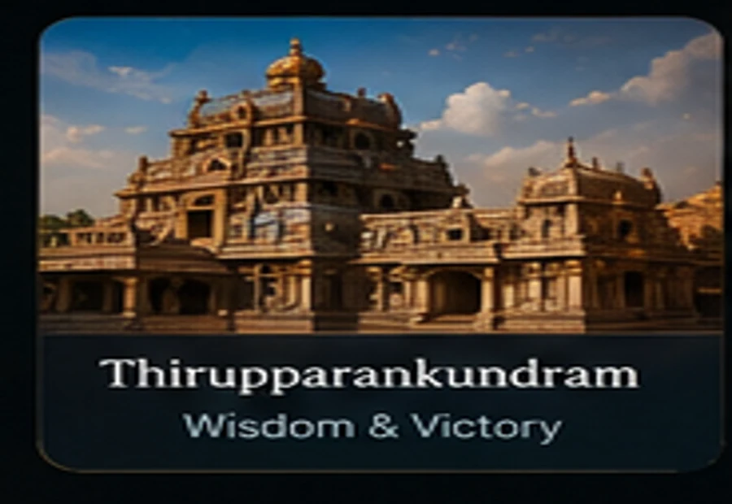

Tiruchendur
திருச்செந்தூர்
Courage, protection and victory over adversity.
Open temple guide →தமிழ்நாட்டின் முருகன் திருத்தலங்கள்
The Six Sacred Abodes of Lord Murugan—presented as a visual pilgrimage with clear Tamil context, respectful devotional artwork and direct access to each temple record.
Sacred temple journey
Swipe on mobile or use the arrows on desktop. Each card links to the existing temple-detail route.
Interactive devotional experience
Touch-friendly horizontal temple navigation.
Subtle depth that respects reduced-motion settings.
Temple pages can connect to songs and chants.
Temple names remain compatible with the existing search model.